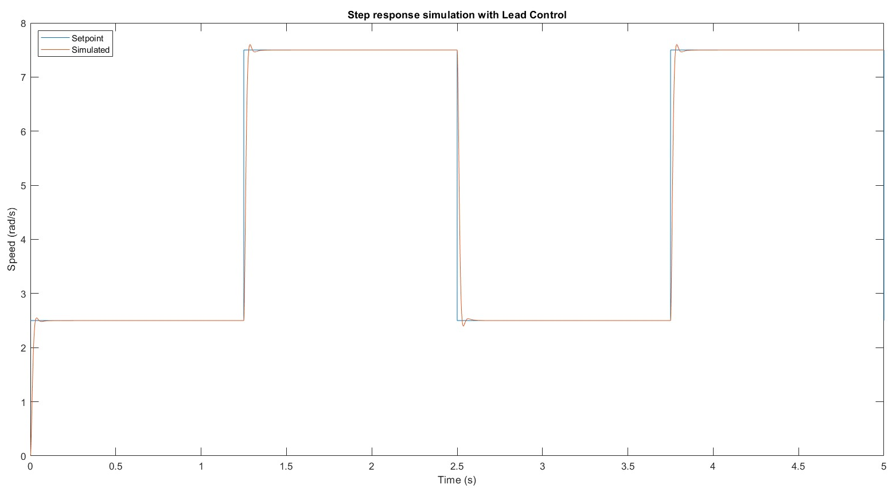

Experiment Overview
Speed control appears in nearly every powered system — jet engine fuel flow, electric motor drives, rotor RPM regulators, and propeller governor systems. The choice of controller architecture fundamentally changes how a system responds to step commands and rejects disturbances. This lab designed and directly compared two controllers for SRV02 motor speed regulation — a PI controller and a lead compensator — using both frequency-domain analysis (Bode plots) and time-domain step response evaluation in simulation and on hardware.
- Analyze the stability margins of the augmented plant Pi(s) = K / [s(τs+1)] using Bode plots and gain/phase margin
- Design and evaluate a PI controller for motor speed step tracking
- Design and evaluate a lead compensator as an alternative controller architecture
- Compare PI and lead performance in simulation and hardware implementation, explaining observed differences


